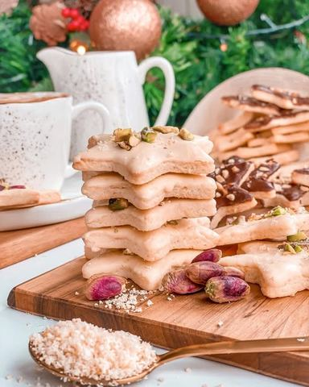

PRAZNIČNI ČAJNI KEKSIĆI

Moja beleška
SačuvanoSastojci
- Recept
Priprema
•••Jaje umutite sa šećerom, žicom za mućenje sve dok se boja potpuno ne promeni i volumen udvostruči. Tome dodajte istopljen i prohladjen puter pa brašno za praškom za pecivo i aromatizovanu koru narandze (ja sam je pronašla u Lidlu i zaista da divnu aromu i obogati ukus) Testo umesite rukama i nema potrebe da dodajete brašno. Biće masnjikavo i zgodno za rukovanje. Podlogu pospite brašnom kao i oklagiju. Razvucite testo i vadite oblike po želji. Rernu zagrejte na 180 C i dovoljno je da se peku svega 6-7 minuta. Čim ivice dobiju zlatnu boju, spremni su za vadjenje i hladjenje. Neko voli da ih gricka i takve, ali ja sam morala da umešam i malo čokolade u celu tu priču. Ipak su ovo praznični čajni keksići, a kakav je to praznik bez čokolade? 🙈 Istopila sam posebno belu, posebno crnu čokoladu u mikrotalasnoj i dodala samo po kašičicu ulja. Umakala sam svaki keksić posebno, a onda posula seckanim pistaćima i lešnicima. Kome podje za rukom, ovo su jedni od onih koji mogu da stoje i više dana.
Originalni opis sa Instagrama
PRAZNIČNI ČAJNI KEKSIĆI 💫 Imate li vi neki provereni recept za čajne keksice? Ovo je jedan od onih gde se testo zamesi za 5 minuta, od svega 5 osnovnih sastojaka koje uvek imamo u kući, odmah razvuče, vade se oblici, peku se svega 6,7 minuta i onda možete da uživate u grickanju. A možete i da ih umočite u belu i crnu čokoladu, dodate malo seckanih pistaća, badema ili lešnika i napravite pravu rapsodiju ukusa. Ja sam koristila diskove bele i crne Callebaut čokolade iz @curcuma_vracar, uz dodatak pistaća i lešnika i malo arome pomorandze i nisam pogrešila ni malo 👌🏼 Sigurna sam da ćete se i vi uveriti u to 💫 Recept: •350 gr mekog, belog brašna, tip 400 •70 gr šećera •1/2 kašičice praška za pecivo •200 gr putera •1 jaje •2 pune supene kašike aromatizovane kore narandze •100 gr Callebaut bele čokolade •100 gr Callebaut crne čokolade •seckani pistaći i lešnik (opciono) •••Jaje umutite sa šećerom, žicom za mućenje sve dok se boja potpuno ne promeni i volumen udvostruči. Tome dodajte istopljen i prohladjen puter pa brašno za praškom za pecivo i aromatizovanu koru narandze (ja sam je pronašla u Lidlu i zaista da divnu aromu i obogati ukus) Testo umesite rukama i nema potrebe da dodajete brašno. Biće masnjikavo i zgodno za rukovanje. Podlogu pospite brašnom kao i oklagiju. Razvucite testo i vadite oblike po želji. Rernu zagrejte na 180 C i dovoljno je da se peku svega 6-7 minuta. Čim ivice dobiju zlatnu boju, spremni su za vadjenje i hladjenje. Neko voli da ih gricka i takve, ali ja sam morala da umešam i malo čokolade u celu tu priču. Ipak su ovo praznični čajni keksići, a kakav je to praznik bez čokolade? 🙈 Istopila sam posebno belu, posebno crnu čokoladu u mikrotalasnoj i dodala samo po kašičicu ulja. Umakala sam svaki keksić posebno, a onda posula seckanim pistaćima i lešnicima. Kome podje za rukom, ovo su jedni od onih koji mogu da stoje i više dana. Prijatno 🌸 • • • #čajnikeksići #praznicnikeksici #keksici #keksicisačokoladom #izmojelihinje #pistachio #pečenilešnik #praznicinamstizu #mojirecepti #homemadecookies #homemadewithlove❤️